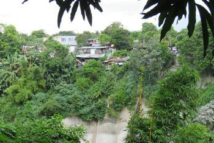

Cambio climático en América Latina, ébola, homofobia, El Salvador… Las noticias del lunes
18 Mayo 2026
América Latina y el Caribe enfrentan fenómenos climáticos cada vez más extremos. La ONU pide apoyo urgente ante brote de ébola en RD Congo. Aumenta la discriminación contra personas LGBTIQ+. Expertos instan a El Salvador a liberar a la defensora de derechos humanos Ruth López.